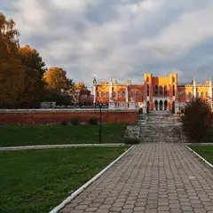
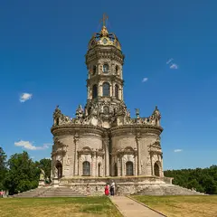
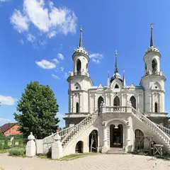
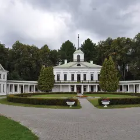
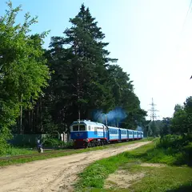
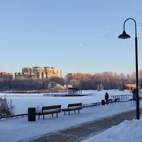
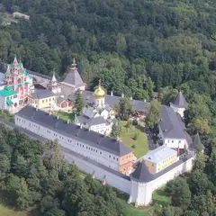

Подборка редакции · Москва
За город из ленты
Куда уехать на день за лучшими кадрами сезона: «английский» замок в Марфине, пруд с парусником в Ромашкове, храм-корона в Дубровицах, сказочное Абрамцево, дачи 1930-х в Кратове и закат на Сенеже. До большинства мест — на электричке.
- 12 мест
- до 3 000 ₽ на человека
Что в подборке 12

с. Марфино, г.о. Мытищи
Новое
Красно-белый «английский» замок с грифонами на лестнице, мост над прудом и пейзажный парк — фото отсюда легко выдать за Англию. Около часа от Москвы: электричка до Лобни, дальше такси; на территории санаторий, вход за символическую плату.
Подробнее и маршрут: Усадьба МарфиноПозвать сюда: Усадьба Марфино
Фото: Ted.ns, CC BY-SA 4.0 · Wikimedia Commons
с. Ромашково, Заречная ул., 26
Новое
Пруд с парусной лодкой, разноцветные домики у воды и ресторан «Клёвый» с террасой над прудом — в нескольких километрах от МКАД. Электричка с Белорусского до Ромашково, прогулка у воды и ужин на террасе.
Подробнее и маршрут: Ромашково: «Клёвое место»Позвать сюда: Ромашково: «Клёвое место»
пос. Абрамцево, Сергиево-Посадский г.о.
Новое
Усадьба, где жили Мамонтов, Васнецов и Серов: деревянный дом над Ворей, избушка на курьих ножках и церковь по эскизам художников. Электричка с Ярославского — час с небольшим, от платформы 15–20 минут пешком.
Подробнее и маршрут: АбрамцевоПозвать сюда: Абрамцево
Фото: Dmitry Ivanov., CC BY-SA 4.0 · Wikimedia Commons

пос. Дубровицы, г.о. Подольск
Новое
Барочный храм из белого камня с короной вместо купола и скульптурами на фасаде — один из самых необычных в России. Стоит на мысу над слиянием Пахры и Десны; от Подольска — 15 минут на автобусе.
Подробнее и маршрут: Знаменская церковь в ДубровицахПозвать сюда: Знаменская церковь в Дубровицах
Фото: Goussew, CC BY-SA 4.0 · Wikimedia Commons

с. Быково, Раменский г.о.
Новое
Белая Владимирская церковь Баженова похожа на готический замок с двумя башнями. Дворец стоит на территории санатория — смотрим снаружи; электричка с Казанского до Быково, дальше автобус или такси.
Подробнее и маршрут: Усадьба БыковоПозвать сюда: Усадьба Быково
Фото: Ludvig14, CC BY-SA 4.0 · Wikimedia Commons

Фирсановка, г.о. Химки
Новое
Классическая усадьба с колоннадами, где юношей гостил Лермонтов: главный дом, флигели, каскад прудов и липовые аллеи. 40 минут на электричке с Ленинградского вокзала и 20 минут пешком.
Подробнее и маршрут: Усадьба СередниковоПозвать сюда: Усадьба Середниково
Фото: Senegalka, CC BY-SA 4.0 · Wikimedia Commons

пос. Кратово, Раменский г.о.
Новое
Старый дачный посёлок в соснах: деревянные дома с верандами и резьбой, песчаные улицы и пруд. Дачи частные — смотрим и снимаем с улицы; электричка с Казанского вокзала идёт около часа.
Подробнее и маршрут: КратовоПозвать сюда: Кратово
Фото: Artem Svetlov from Moscow, Russia, CC BY 2.0 · Wikimedia Commons

Солнечногорск, набережная озера Сенеж
Новое
Большое озеро с деревянной набережной и качелями у воды — сюда едут за закатом и тишиной. Электричка с Ленинградского вокзала до Подсолнечной около часа, дальше 20 минут пешком.
Подробнее и маршрут: Озеро СенежПозвать сюда: Озеро Сенеж
Фото: Правительство Московской области, CC BY 4.0 · Wikimedia Commons
пос. Горки Ленинские, Ленинский г.о.
Новое
Белая усадьба с колоннадой, грот, ротонда и старый парк с прудами в 10 км от МКАД. Вход в парк платный; от «Домодедовской» — автобус около получаса.
Подробнее и маршрут: Горки ЛенинскиеПозвать сюда: Горки Ленинские
Фото: Dmedvedev83, CC BY-SA 4.0 · Wikimedia Commons

Звенигород, гора Сторожа
Новое
Белый монастырь XIV века на холме над Москвой-рекой в Звенигороде: стены с башнями, сады и вид на леса. Электричка с Белорусского до Звенигорода, от станции — автобус.
Подробнее и маршрут: Саввино-Сторожевский монастырьПозвать сюда: Саввино-Сторожевский монастырь
Фото: Leonid Rybakov, CC BY-SA 4.0 · Wikimedia Commons
пос. Остафьево, Новая Москва
Усадьба Вяземских в Новой Москве: дворец, где бывал Пушкин, парк и пруд.
Подробнее и маршрут: Усадьба ОстафьевоПозвать сюда: Усадьба Остафьево
Фото: Дмитрий Рогачёв, CC BY-SA 3.0 · Wikimedia Commons
Ильинское ш., Красногорск
«Подмосковный Версаль» Юсуповых: дворец, террасы и регулярный парк. Сразу за МКАД.
Подробнее и маршрут: Усадьба АрхангельскоеПозвать сюда: Усадьба Архангельское
Фото: Ghirlandajo, CC BY-SA 4.0 · Wikimedia Commons


Как позвать
- Выбери план, место или событие — в карточке адрес, цены и маршрут в Яндекс Картах.
- Нажми «Позвать сюда» — соберётся приглашение-игра для свидания или голосование для компании.
- Отправь ссылку в любой мессенджер: тебе ответят, а компания отметит, куда и когда может. Бесплатно и без регистрации.